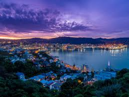

Welcome to New Zealand
Wellington

In Wellington, the capital of the island country of New Zealand, you can see and try out a lot, for example there Lots of nice tours with the Lord of the Rings theme including visiting the Weta Workshop. There you can see a lot of costumes and other key pieces of the development of the films or visit the filming locations of the legendary film Drieology.
Or you can watch cute furry robes lazing about in Wellington Bay with a bod or from land
Wellington is a tourist metropolis. With 212,700 (2017) inhabitants, the city is the second largest city in all of New Zealand and has many beautiful restaurants and hotels to offer,such as

information as of 2024